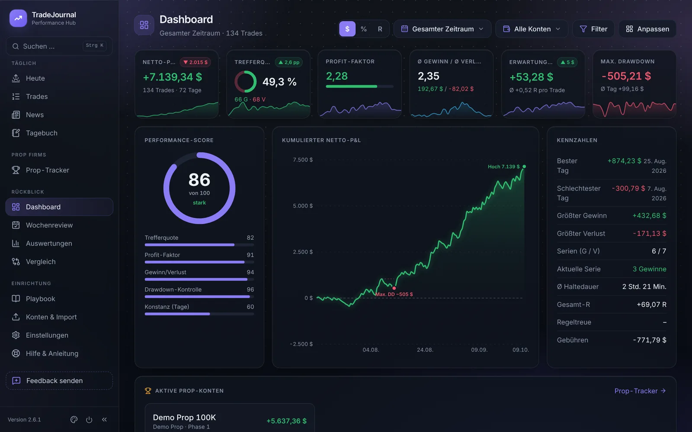
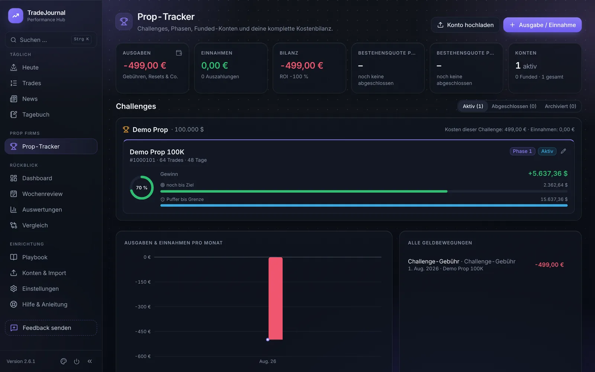
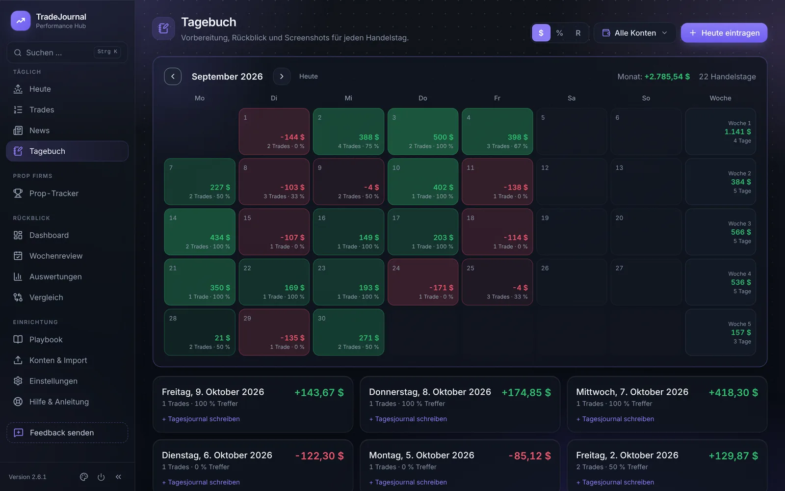

TradeJournal holt deine Trades automatisch aus MetaTrader 5, zeigt dir, wo du Geld verdienst und wo du es verlierst, und behält deine Prop-Firm-Regeln im Blick. Alles läuft auf deinem eigenen PC.

Vom automatischen Import bis zur Wochenauswertung. Gebaut von einem Trader für Trader, die ihre Prop-Firm-Challenges ernst nehmen.
Der MT5-Dienst überträgt geschlossene Trades in Sekunden ins Journal. Alternativ reicht der normale MT5-Bericht.
Gewinnziel, Drawdown-Puffer, Phasen und die echten Kosten aller Challenges auf einen Blick.
Nach Wochentag, Uhrzeit, Symbol, Setup, Tag und Emotion. Umschaltbar zwischen Dollar, Prozent und R.
Jeder Handelstag im Kalender, mit Vorbereitung, Rückblick, Screenshots und Wochenreview.
Setups mit Checklisten, Regel-Check pro Trade und ein Trade-Limit, das vor Overtrading warnt.
Zwei Zeiträume nebeneinander, mit allen Kennzahlen und beiden Kurven übereinander.
Der Prop-Tracker zeigt, wie weit du vom Ziel entfernt bist und wie viel Puffer du bis zur Drawdown-Grenze noch hast.

Grüne und rote Tage, Wochensummen und deine Notizen. So erkennst du Muster, bevor sie teuer werden.

TradeJournal läuft komplett auf deinem PC. Es gibt kein Konto und keine Cloud.
Trades, Notizen und Screenshots liegen in deinem eigenen Ordner, mit täglichem Backup.
Beim Update-Check wird nur gelesen, welche Version aktuell ist. Deine Daten bleiben bei dir.
Auch ohne Internet funktioniert alles, außer News und Updates.
Keine Installation im klassischen Sinn: entpacken, starten, loslegen.
Lade TradeJournal-x.y.z.zip von der Download-Seite und entpacke sie mit „Alle extrahieren“.
Doppelklick auf „TradeJournal“. Beim ersten Mal fragt Windows nach, einmal auf „Ausführen“ klicken.
Die Checkliste in „Hilfe & Anleitung“ führt dich durch Konto, MT5-Dienst und Zeitzone.
Voraussetzungen: Windows 10 oder 11, Google Chrome empfohlen, MetaTrader 5 für den automatischen Import.